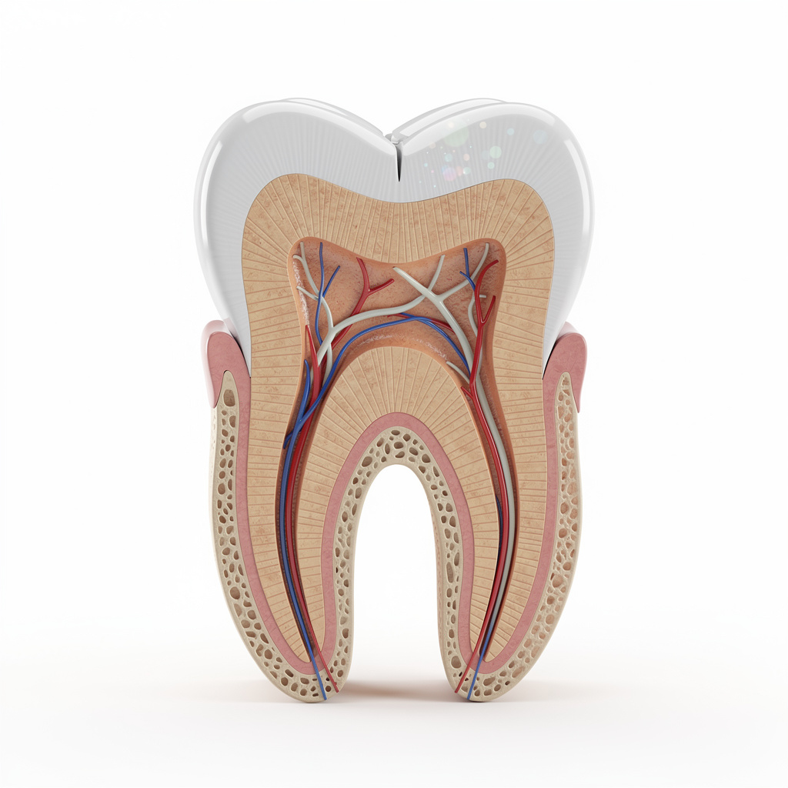
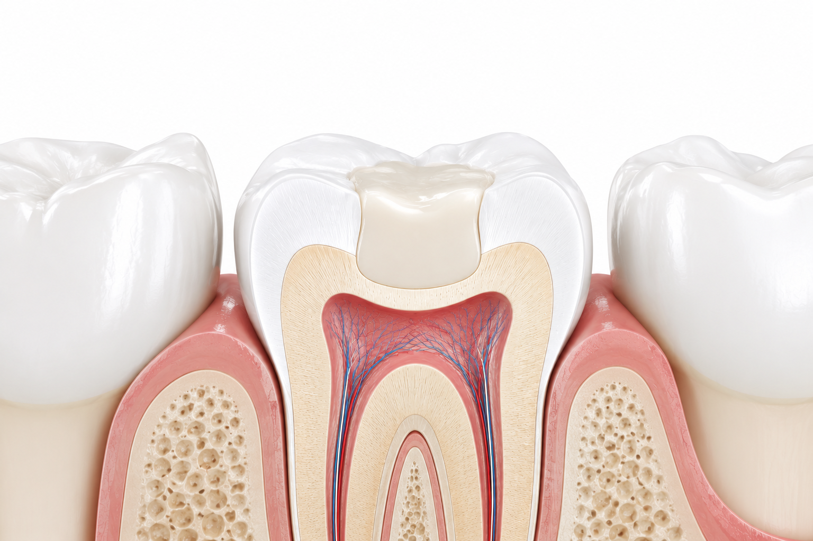
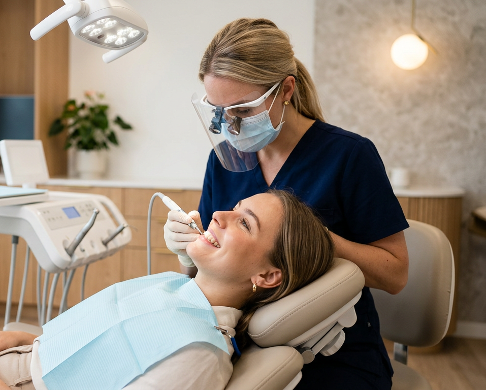
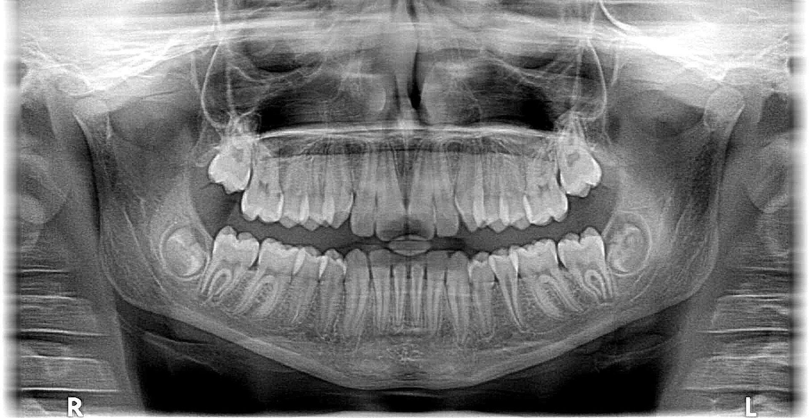

Root canal treatment is a procedure performed when the nerve and vascular tissue inside the tooth—known as the pulp—becomes damaged due to infection, deep decay, or trauma. During the treatment, infected tissues are removed, and the root canals are filled and sealed with special materials, aiming to preserve the tooth in a healthy state within the mouth. Thanks to root canal treatment, the natural tooth can be retained and used for many years without needing extraction.
A detailed examination and radiographic assessment are performed prior to root canal treatment. After the infected or damaged nerve tissue is removed, the root canals are shaped and disinfected. Subsequently, the canals are sealed by filling them with specialized materials. In cases where necessary, fillings or crowns may also be applied to enhance the tooth's durability.
Root canal treatment may be performed in cases involving deep cavities, dental trauma, advanced infections, or damage to the nerve tissue. It is an option for patients of all ages—including children and adults—provided the tooth can be saved. The suitability of the treatment is determined based on the tooth's condition and a specialist's examination.
Initially, mild sensitivity may be experienced. This condition usually resolves within a short period.

Aesthetic filling is a treatment method that uses special tooth-colored composite materials and aims to preserve the natural appearance of the tooth. It is preferred for treating cavities, repairing fractured or worn teeth, and improving aesthetic appearance. Thanks to its composition, which is compatible with tooth structure, it yields natural and aesthetic results.
Before treatment, the tooth is thoroughly evaluated, and any decayed or damaged tissue is removed as necessary. Subsequently, a filling material matching the tooth color is applied in layers and shaped. Finally, the filling is hardened using special light devices and polished to achieve an appearance that blends naturally with the tooth.
Aesthetic fillings can be used for patients with teeth that have suffered structural loss due to decay, or that are fractured, cracked, or misshapen. Suitable for both front and back teeth, this treatment method helps meet both functional and aesthetic expectations. Suitability is determined following a professional examination.
The materials used for aesthetic fillings are selected to mimic the natural color and structure of the tooth. This ensures a harmonious appearance between the filling and the natural tooth. Particularly when applied to front teeth, the filling is very difficult to detect—provided there is proper planning and application.
The lifespan of aesthetic fillings may vary depending on the treatment site, oral hygiene, and the individual's habits. With regular oral care and routine dental check-ups, they can remain in good condition for many years.

Tartar removal is the process of eliminating hardened plaque and tartar that accumulate on tooth surfaces and around the gums over time. When performed regularly, it helps maintain oral and dental health, prevents gum diseases, and creates a healthier oral environment.
Tartar removal is recommended for individuals who have tartar buildup, bleeding gums, or those who want to maintain better oral hygiene. It is typically performed during regular dental checkups.
Tartar formation varies from person to person. Generally, an assessment once or twice a year as part of regular dental check-ups is recommended; however, for individuals prone to tartar buildup, it may be performed more frequently based on the dentist's recommendation.
When performed by a specialist using the correct techniques, tartar removal does not damage the teeth. On the contrary, it helps preserve dental and gum health by removing tartar deposits that accumulate on the tooth surface and can negatively affect oral health.

Oral, dental, and maxillofacial radiology encompasses diagnostic methods that provide detailed imaging of the teeth, jawbones, and surrounding tissues. Through X-ray images, conditions such as cavities, infections, impacted teeth, bone loss, and many issues difficult to detect visually within the mouth can be identified at an early stage. It plays a crucial role in accurate diagnosis and treatment planning.
Some oral and dental problems may not be fully assessed through a clinical examination alone. X-ray images facilitate an accurate diagnosis by enabling a detailed examination of the teeth and jaw structure. This allows the treatment process to be carried out in a safer and more planned manner.
Aesthetic fillings can be used for patients with teeth that have suffered structural loss due to decay, or that are fractured, cracked, or misshapen. Suitable for both anterior and posterior teeth, this treatment method helps meet both functional and aesthetic expectations. Suitability is determined following a professional examination.
Modern digital X-ray systems use a very low dose of radiation to obtain images. With protective equipment and up-to-date technology, the procedure is performed safely. When necessary, it provides significant benefits for diagnosis and treatment planning.
Dental X-rays can be taken during pregnancy only when necessary and with appropriate protective measures. The patient's pregnancy status must always be disclosed to the dentist. The dentist will determine the most suitable approach in necessary cases.

Learn about our treatment processes and available appointment times by contacting us.
You can contact us for questions or appointment requests.
Monday - Saturday
10:00 - 19:00Sunday
Closed